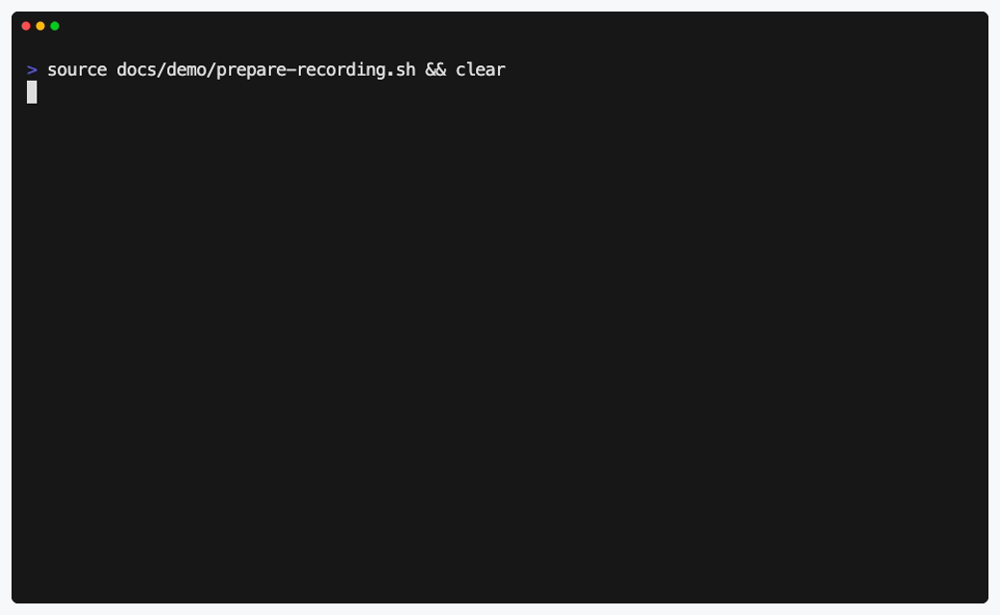

README quickstart verification
SetupProof
Run the setup command people copy from the README before a new contributor has to debug it.

What it catches
A broken README should fail in CI.
SetupProof runs the shell block maintainers explicitly mark, then reports the README location that needs attention.
<!-- setupproof id=quickstart -->
```sh
npm ci
npm test
```[failed] README.md#quickstart file=README.md:18 runner=local timeout=120s result=failed exit=1
Fix the setup path once, in the same place contributors read it.Where it helps
Catch the boring break before a contributor does.
Setup docs usually fail because something small moved and nobody reran the public path from a clean checkout.
-
Changed install path.
The README still says
npm ciafter the project switches package managers. -
Renamed local service.
The quickstart points at
web, but the Compose service is nowapp. -
Moved package.
A monorepo example keeps
cd packages/siteafter the package was relocated.
Maintainer path
Mark, review, run.
Keep prose examples inert by default and make only the real setup path executable.
-
01
Mark the trusted block.
Add a
setupproofmarker above the README command that must stay runnable. -
02
Review before executing.
Inspect the runner, timeout, shell, environment, and source command.
-
03
Run from a clean copy.
Use the CLI locally or pin the GitHub Action in pull request checks.
Ship setup docs that still work.
Apache-2.0. No telemetry. Built for maintainers who own the README.